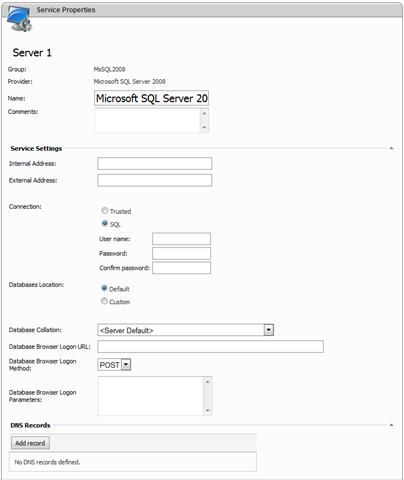

SQL Server 2000/2005/2008 Provider Settings

Please note if you are registering remote SQL server which is not on the same box with WSP Server application your customers will not be able to do backups and restores of their databases.
-
Internal Address - Specify SQL Server instance to be controlled. If Server application is installed on the same box with SQL Server you can use just "(local)" for SQL Server Standard edition and higher and "(local)\sqlexpress" for SQL Server 2005 Express. You can also specify IP address here.
-
External Address - Specify IP address to access this SQL server instance from outside. This IP address will be used by Web Applications Installer (in the connection strings) and can be shown in hosting space summary information.
-
Connection - Select security mode or the way how WSP will connect to SQL Server to manage its databases and logins. If the SQL Server instance is installed locally you may use "Trusted connection" as "WebsitePanelServer" account under which Server web application pool is working is a member of "Administrators" group; otherwise select "SQL" connection type and specify username and password of SQL account with administrative privileges.
-
Databases Location - Select the location for newly created databases. If you select "Default" location all database .MDF and .LDF files will be stored in "Data" folder of SQL Server ("c:\Program Files\Microsoft SQL Server\MSSQL\Data" folder by default). If you select "Custom" location you can specify the path to the folder where all database files will be stored.
-
Database Collation - if may specify the collation of new databases. This option may be useful when non-standard culture-specific collation was set as server default collation. If nothing is selected in this field new databases will be created with server default collation specified during SQL Server installation.
DNS Records
Verify/change SQL Server DNS record and its data (IP address). This DNS "A" record will be added to all created DNS customer zones and it allows customer to access SQL Server by using not only IP address, but the domain name too (e.g. sql.mydomain.com).